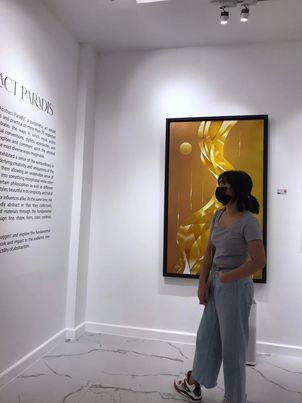

Name: Mary Lindsay C. Cirico
Nickname/s: Meri, Say, Pots
Age: 15 years old
Birthdate: September 08, 2007
Height: approx. 160 cm
Weight: 52 kg.
Zodiac Sign: Virgo
MBTI: INTP
Blood Type: O+
Nationality: Filipino
- Has an younger sister that is 5 years younger than her.
- Studied at Francisco Benitez Elementary School III during her Elementary year.
- Currently studying at Gen. Pio Del Pilar NHS for her middle school.
- She will study at La Concordia College for her senior year.
- She have a dog named Sierra.
- Her current favorite songs are Sorry, Heart by NCT Dream, Child by NCT Mark and TFW by ENHYPEN
- Nursing is her dream course.
HOME
FAVORITES
GALLERY
CONTACT